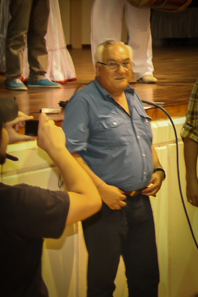
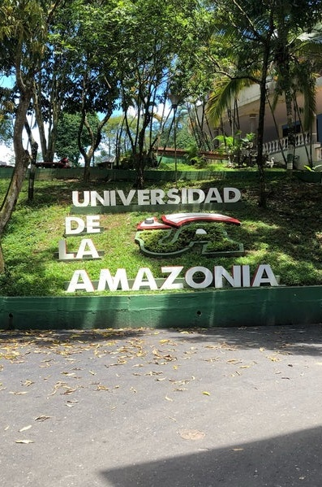
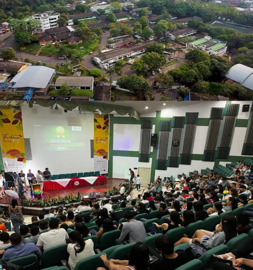

06 Abril 2026
Concurso de Diseño
Consúlten las bases del concurso de diseño para participar en el VICCM 2026.
Leer más
Sexto Congreso Colombiano de Mastozoología · 2 al 6 de noviembre de 2026
El Congreso Colombiano de Mastozoología se celebra cada dos años y sus sedes se alternan de manera itinerante en distintas regiones biogeográficas de Colombia, con el propósito de visibilizar la riqueza natural y cultural de cada territorio, así como fortalecer el desarrollo de las distintas formas de construcción de conocimiento y de gestión de la biodiversidad de mamíferos.
Para esta sexta edición la sede será la Amazonía colombiana, una región reconocida mundialmente por su extraordinaria biodiversidad y por ser el hogar de comunidades que han tejido una relación profunda con la naturaleza.
Consulta convocatorias, circulares y anuncios más recientes del congreso.
Consúlten las bases del concurso de diseño para participar en el VICCM 2026.
Leer más
Ya está disponible la segunda circular con información actualizada del congreso.
Leer más
Conoce las categorías de premios y reconocimientos del VI Congreso Colombiano de Mastozoología.
Leer másAsegura tu participación en el congreso más importante de mastozoología en Colombia.
INSCRÍBETE AQUÍUniversidad de la Amazonia · Florencia, Caquetá



Principios que orientan la experiencia del VICCM 2026.
El intercambio abierto de ideas y la libertad de pensamiento y expresión son fundamentales para los objetivos y metas del VICCM 2026; estos requieren un entorno que reconozca el valor inherente de cada persona y grupo, que fomente la dignidad, la comprensión y el respeto mutuo, y que abrace la diversidad.
La transparencia es necesaria para una ciencia reproducible. Promovemos que las decisiones, los métodos y los protocolos sean claros, transparentes y reproducibles, desde la fase de planificación hasta el análisis y resultado final.
Ningún método ni procedimiento analítico es perfecto. Valoramos la consideración de las fortalezas y limitaciones de cada método o análisis, favoreciendo resultados sólidos y decisiones informadas.